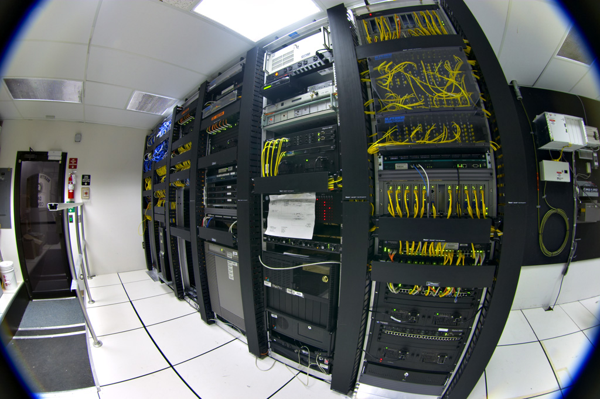
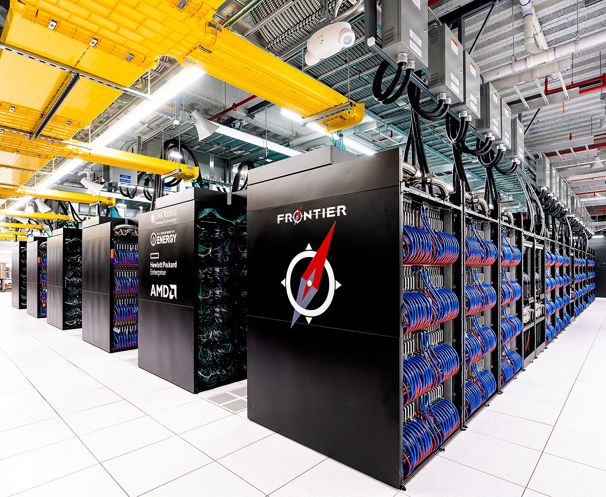

Vol. I · No. 38 · Thursday, June 25, 2026 · 10 items · ~14 min read
Anthropic accuses Alibaba of the largest raid yet on Claude; a week-old Iran deal splits over who agreed to what; Rockstar prices Grand Theft Auto VI at $80; and the Court keeps closing its term.
AI · San Francisco
Anthropic accuses Alibaba of the largest raid yet on Claude's mind

The contest over frontier models is becoming a fight over who can copy them. — Wikimedia Commons
AnthropicInstitutionThe San Francisco AI lab behind the Claude models, now moving through a confidential IPO process; protecting the value locked inside its models is becoming as much a legal problem as a technical one. told US senators and White House officials, in a letter that surfaced Wednesday, that operators tied to AlibabaInstitutionThe Chinese technology giant whose Qwen models are its frontier-AI line; Anthropic names operators affiliated with it and its AI lab as the actors behind the campaign. and its AI lab carried out "the largest known distillationConceptTraining a cheaper model on a stronger model's outputs to copy its capabilities while skipping the original research-and-development cost. attack on Anthropic to date." The company says about 25,000 fraudulent accounts were used to extract roughly 28.8 million exchanges with Claude between April 22 and June 5, with the queries concentrated on software engineering and agentic reasoning, the model's most commercially valuable skills.
Distillation harvests a frontier model's reasoning and then trains a cheaper model on the outputs, skipping the original research bill. Anthropic frames this as adversarial distillationConceptDistillation done covertly and at industrial scale against an unwilling provider, via mass fraudulent querying rather than a licensing deal., done covertly against an unwilling provider, and says Alibaba ignored an April White House memo that pledged to help labs detect and coordinate against the practice. The campaign, by its account, exceeded earlier efforts it attributed to DeepSeek, Moonshot, and MiniMax combined.
The accusation lands as Anthropic moves through a confidential public offering and as the US-China model race hardens into a fight over intellectual property. Alibaba did not immediately respond, and Chinese state media cast the claim as "tech hegemony anxiety." For a reader watching both the AI capital-markets race and the law that will police it, this is the opening of a different front: not who builds the best model, but who can stop a rival from quietly copying it.
The largest known distillation attack on Anthropic to date.
— Anthropic, letter to US senators, June 24
Why it mattersThe value in a frontier model is increasingly the thing hardest to protect, and a 25,000-account raid reframes the AI race as an intellectual-property and trade-secrets problem that lands on lawyers as much as engineers, a theme that will outlast this particular accusation.
A week into the Iran deal, Washington and Tehran can't agree what it says
A week after the United States and Iran reached an interim understanding, the two sides are openly contradicting each other on its central term. Rafael GrossiPersonDirector general of the International Atomic Energy Agency, the UN nuclear watchdog; his word on whether inspectors are admitted is the test of any deal's substance., head of the IAEAInstitutionThe International Atomic Energy Agency, the UN body that verifies states' nuclear activity through on-site inspection., said Wednesday that inspectors will visit Iran's enrichment sites under the deal, his firmest statement yet. Hours later Iran's foreign-ministry spokesman said no visit is scheduled and any inspection waits for a final agreement, directly refuting Vice President JD Vance. President Trump has said Iran agreed to inspections "into infinity."
The 60-day framework sets no limits on Iran's nuclear program, deferring that to further talks, and the fine print is fraying elsewhere too. In Abu Dhabi, Secretary of State Marco Rubio drew a line on the Strait of HormuzPlaceThe narrow waterway between Iran and Oman through which roughly a fifth of the world's seaborne oil passes; a chokepoint where any disruption is felt in prices and insurance first., through which about a fifth of the world's seaborne oil moves: "No country is allowed to charge tolls or fees on an international waterway." The preliminary deal guarantees free passage "for 60 days only," implying Iran could seek tolls afterward, which Rubio said the US will not accept in any final deal. A UN agency has begun evacuating mariners stranded in the Gulf.
Why it mattersAn inspection regime the two signatories describe in opposite terms is not yet a deal, and a freedom-of-navigationConceptThe principle of international law that ships may pass through international straits without being charged or impeded; the legal basis for Rubio's red line on Hormuz tolls. fight over Hormuz is where the markets, the insurers, and international law would feel any breakdown first.
Framing noteWire and left-leaning outlets (NPR) frame the week as a credibility gap inside a deliberately vague deal; right-leaning coverage (Fox) casts Tehran as the bad actor denying what it agreed to.
Rockstar prices Grand Theft Auto VI at $80, and the industry exhales
Rockstar GamesInstitutionThe studio behind Grand Theft Auto, owned by Take-Two Interactive; GTA VI is the most anticipated release in the medium's history. set the price of Grand Theft Auto VI at $79.99 for the standard edition and $99.99 for an "Ultimate" tier, and confirmed a November 19 launch on PlayStation 5 and Xbox Series X|S, as preorders opened Thursday. The $80 standard lands in line with most new releases and defuses months of fear that the biggest game ever made would reset the AAAConceptThe industry term for the highest-budget, highest-profile game releases; the $70-to-$80 standard price has been the post-2020 norm, and a $100 GTA VI would have moved the whole market's anchor. ceiling at $100. Shares of Take-TwoInstitutionTake-Two Interactive (Nasdaq: TTWO), Rockstar's parent; GTA VI is the most consequential single product launch in its history. rose on the confirmation.
The reveal carried a quieter shift. Rockstar described the launch as "a single-player experience," with no Grand Theft Auto Online at release; the recurring multiplayer layer is expected to be sold separately, likely weeks later. And the "physical" edition is a download code in a box, no disc, which drew immediate pushback over resale and preservation. Together the choices unbundle a tentpole into a paid base game and a separately monetized live serviceConceptA game sold and updated as an ongoing, monetized service rather than a one-time purchase; splitting GTA Online out lets Rockstar charge for the recurring layer separately..
Why it mattersThe biggest launch in entertainment is also a pricing-power and rights experiment: where the AAA ceiling settles, and whether "physical" can mean a code with no disc, are questions that ripple through licensing, the first-sale doctrineConceptThe rule that the buyer of a lawful copy may resell or lend it; a disc-free download code undercuts the resale and lending rights a physical disc once carried., and the economics of every game that follows.
Capability, the labs, and AI at the edges of law and markets
Corporate · New York
Goldman leads a $110 million bet on AI that underwrites the loan itself
Goldman's growth-equity arm led the round. — Wikimedia Commons
TaktileInstitutionA German-American startup whose no-code platform lets banks and insurers build automated decision flows; founded in 2020 by two former QuantCo engineers., a no-codeConceptSoftware that lets non-engineers build working systems through a visual interface instead of writing code; here, the decision logic a bank runs on every applicant. platform that lets banks and insurers build automated decisioningConceptAI agents that make and execute operational decisions, such as approving a loan or paying a claim, rather than just drafting text for a human to act on. flows, raised a $110 million Series C led by the growth-equity arm of Goldman Sachs AlternativesInstitutionGoldman Sachs's private-markets investing division, which runs the bank's growth-equity, private-equity, and credit strategies., the company said Wednesday, bringing its total raised to $184 million. The pitch is that AI agents can now run decisions that once took human judgment hours: loan underwriting, identity checks, claims, fraud screening.
One large insurer projects more than $90 million in claims-processing efficiencies on the platform alone, Taktile says. The round is a marker of where 2026 AI money is going: not toward bigger models, but toward software that automates the operational decisions inside regulated industries, with a brand-name bank funding the picks and shovels.
Why it mattersThis is the AI-hollowing thesis one industry over from law: when an agent can underwrite a loan or adjudicate a claim, the judgment work that justified a desk of analysts becomes a configuration screen, and the capital is lining up behind exactly that shift.
Reid Hoffman calls xAI "a complete train wreck" and needles SpaceX's AI turn
Reid HoffmanPersonLinkedIn co-founder, Greylock partner, and early OpenAI backer; one of the most-listened-to investor-commentators on the AI industry's structure., the LinkedIn co-founder and Greylock investor, used a podcast appearance reported Wednesday to deliver a blunt read on the field. He called Elon Musk's xAIInstitutionMusk's artificial-intelligence company, maker of the Grok models; Hoffman notes all eleven of its original cofounders have now departed. "a complete train wreck" as a foundation-model effort, noting that all eleven of its original cofounders have now left, and dismissed the idea that SpaceX, fresh off its June IPO and a deal to buy the coding startup Cursor, is an AI company. "You're a premium-priced CoreWeaveInstitutionA GPU-cloud "neocloud" provider that rents out AI compute; Hoffman's jab implies SpaceX is buying compute and credibility, not building models.," he said, "the IAC of AI."
On the two labs racing to go public, Hoffman was bullish on both: "There's a lot of room for both of them to win incredibly," he said of OpenAI and Anthropic, which he argued occupy distinct enough positions to coexist. The comments are insider color on an industry whose structure investors are scrambling to price as two of its biggest names approach the market.
Why it mattersWhen an early OpenAI backer says the field has room for two winners and that a marquee rival is a "train wreck," it is a read on how the IPO race may actually sort out, the kind of structural take worth weighing against the deal hype.
Capital markets, dealmaking, and the mechanics of the trade
Corporate · New York
An aerospace-parts maker prices an upsized $919 million IPO, and a sponsor cashes out
Doncasters begins trading on the New York Stock Exchange on Thursday. — Wikimedia Commons
Doncasters, a maker of precision cast components and nickel-and-cobalt superalloysConceptHeat-resistant metal alloys engineered to keep their strength at extreme temperatures, used in jet-engine and gas-turbine hot sections. for jet engines and gas turbines, priced an upsizedConceptWhen book demand lets an issuer sell more shares, and often at a higher price, than the deal was originally marketed for. initial public offering on Wednesday night, selling 27.86 million shares at $33, a dollar above the top of its marketed range, to raise about $919 million. With a greenshoeConceptAn over-allotment option letting underwriters buy up to about 15 percent more shares for 30 days, used to stabilize a new issue; here it could lift the deal toward $1.06 billion., the deal could reach roughly $1.06 billion. The shares begin trading on the New York Stock Exchange on Thursday under the ticker DPC.
The proceeds, plus about $144 million from concurrent private placements, go mostly to repay debt, including a shareholder PIK loanConcept"Payment-in-kind" debt whose interest accrues as more principal rather than cash; repaying it with IPO proceeds is a classic sponsor deleveraging move., the familiar shape of a private-equity owner using the public market to deleverage and exitConceptA sponsor monetizing its stake and paying down the company's debt through an IPO rather than a sale; the use of proceeds tells you the deal's real purpose.. Pricing above the range and upsizing the deal signal book demand strong enough to test the IPO window that reopened for industrials this spring.
Why it mattersThis is the capital-markets work product itself, an upsized, above-range pricing with a sponsor-deleveraging use of proceeds, the exact mechanics a Greenberg Traurig capital-markets associate lives in, live on the tape Thursday morning.
Carnival posts a record quarter, then cuts its outlook on the Middle East
CarnivalInstitutionThe Miami-based cruise company, the world's largest, and a bellwether South Florida public company for the local consumer economy., the Miami-based cruise giant, reported record second-quarter revenue of $6.7 billion and adjusted earnings of 41 cents a share, beating estimates, with customer depositsConceptPrepaid bookings sitting on the balance sheet before a cruise sails; a forward read on demand, here at an all-time high of $9 billion. at an all-time high of $9 billion. The stock still fell about 6 percent, because management cut its full-year net yieldConceptCruise revenue per available passenger-day net of certain costs, the industry's core pricing-power metric; guidance was cut to about 1.75 percent growth from 2.75 percent. growth guidance by a full point, to roughly 1.75 percent, citing the Middle East conflict's drag on European bookings.
It is the rarer case of a company punished for its forecast rather than its results: cruise costs excluding fuel actually improved, and management called the yield hit transitory, pointing to a June booking recovery. The print ties a distant geopolitical shock, the same Iran tape leading today's brief, straight to a South Florida balance sheet.
Why it mattersCarnival is exactly the kind of local public company a Miami capital-markets lawyer covers, and the gap between a record quarter and a falling stock is a clean lesson in how guidance, not the headline number, sets the price.
The Court, the regulators, and the business of the profession
News · Washington · cross-spectrum LLC
The Court shields Monsanto from Roundup failure-to-warn suits
A 7-2 ruling on a term-closing Thursday. — Wikimedia Commons
The Supreme Court ruled 7 to 2 on Thursday that federal pesticide law bars state claims that MonsantoInstitutionThe agrochemical company, now owned by Bayer, that makes the weedkiller Roundup; tens of thousands of suits allege its glyphosate caused cancer. failed to warn that Roundup could cause cancer. Writing for the majority in Monsanto v. Durnell, Justice Kavanaugh held that FIFRAConceptThe Federal Insecticide, Fungicide, and Rodenticide Act, the federal pesticide-labeling regime administered by the EPA.expressly preemptsConceptWhen a federal statute's text directly bars state law on the same subject; here, a state failure-to-warn verdict would force a label the EPA did not approve. a failure-to-warnConceptA products-liability theory that a maker is liable for not warning of a known hazard; the claim the Court held federal law forecloses for Roundup's EPA-approved label. claim because it would require a label "in addition to or different from" the one the EPA approved, which carries no cancer warning. Justice Jackson, joined by Justice Gorsuch, dissented that the majority misreads the statute and leaves plaintiffs remediless.
The lineup is its own story: Sotomayor and Kagan joined the conservative majority while Gorsuch crossed to dissent, a split that tracks doctrine rather than the usual six-to-three. The ruling should trigger dismissal of pending warning-based Roundup suits and bar future ones; Bayer, which had floated a $7.25 billion settlement earlier this year, called it a vindication.
Why it mattersExpress preemption is bread-and-butter corporate-defense work, and a 7-2 ruling wiping out a category of multibillion-dollar tort exposure is the kind of decision that reprices a company's litigation risk overnight.
And it strikes down Hawaii's default ban on guns on private property
In a 6-to-3 decision Thursday, the Court struck down Hawaii's rule that treated firearms as presumptively barred on private property open to the public unless the owner gave express consent. Writing for the majority in Wolford v. Lopez, Justice Alito held that the default ban violates the Second and Fourteenth Amendments, turning "much of public life into a gun-free zone." The three Democratic-appointed justices dissented.
The ruling applies the Court's 2022 BruenConceptNew York State Rifle & Pistol Association v. Bruen (2022), which requires a gun regulation to match the nation's historical tradition of firearm regulation to survive. framework and extends its sensitive-placesConceptBruen's carve-out permitting gun bans in historically regulated locations such as schools and courthouses; the Court declined to let a consent-default rule sweep that broadly. analysis to the consent-default regimes several states adopted after Bruen. It narrows how far states can go to keep guns out of privately owned spaces the public uses.
Why it mattersBruen keeps generating sequels, and this one tells states that a popular post-2022 workaround, flipping the default to no-guns on public-facing private property, does not survive the history-and-tradition testConceptBruen's command that modern gun laws be justified by analogues from the historical record rather than by present-day policy interests..
Consequential geopolitics, with the cross-spectrum read
News · Shenzhen · cross-spectrum LLCR
China retakes the supercomputing crown, but not the AI one

An exascale supercomputer installation. — Wikimedia Commons
A Chinese system called LineShine, at the National Supercomputing Centre in Shenzhen, topped the twice-yearly TOP500InstitutionThe authoritative ranking of the world's most powerful supercomputers, published twice a year and based on a standard linear-algebra benchmark. ranking released this week, displacing the US machine El CapitanInstitutionThe Lawrence Livermore exascale system that had held the No. 1 spot; a US Department of Energy machine used partly for nuclear-stockpile simulation. and giving China the world's fastest supercomputer for the first time since 2017. LineShine clocked 2.198 exaflopsConceptA measure of computing speed: one exaflop is a quintillion (10^18) calculations per second. LineShine is the first machine to exceed two on a CPU-only design., more than two quintillion calculations a second and about 20 percent ahead of El Capitan, and is the first system to break two exaflops on a CPU-onlyConceptA design relying on general-purpose processors rather than the GPUs that power AI training; fast for traditional simulation, less suited to modern machine learning. design.
The caveat is the story. On an AI-relevant benchmark the machine ranked only fourth, and specialists cautioned that traditional supercomputing speed does not translate into the kind of computing that trains frontier AI models, where the United States still leads. The result is a symbol of state capability more than a shift in the AI race, even as it lands amid a hardening US-China technology contest.
Why it mattersThe headline "China builds the world's fastest computer" is half-wrong in a useful way: raw calculation speed and AI compute have diverged, and the gap between the two is exactly the distinction a well-informed reader can draw while everyone else conflates them.
Quiet today on its own beat: the day's marquee entertainment story, Rockstar's $80 pricing and disc-free launch of Grand Theft Auto VI, leads the Front. No other film, music, sport, or games item cleared the bar in the window.
Compiled by Matthew Yellin · mattyellin.com · Est. May 2026 · A cross-spectrum brief drawn each morning from wires, filings, and the trade press